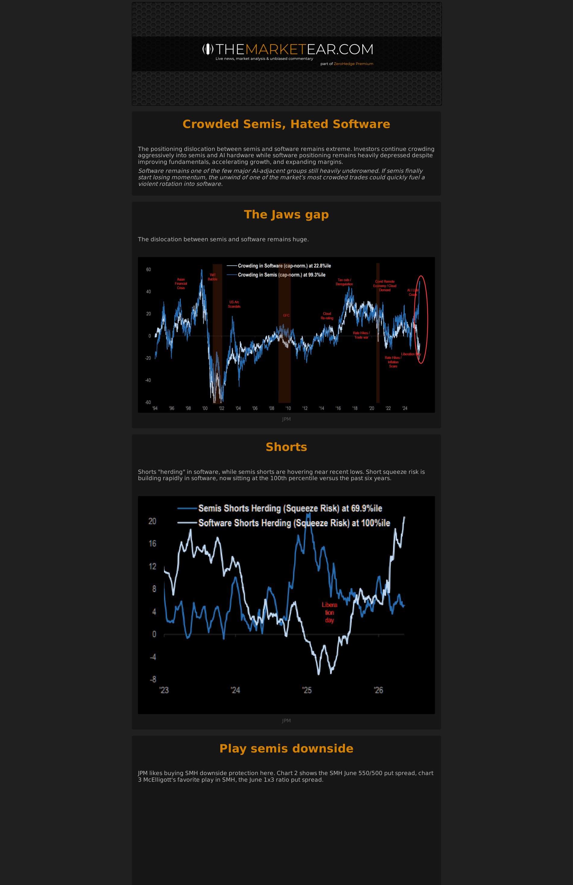
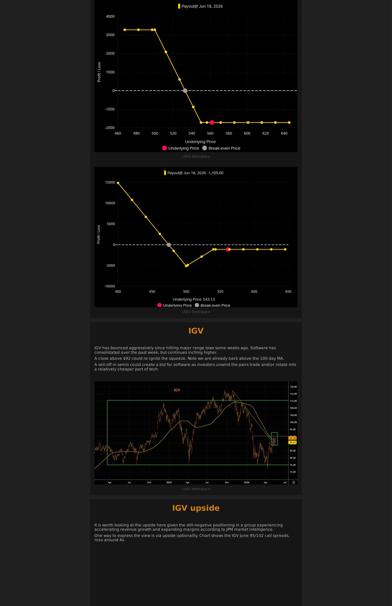
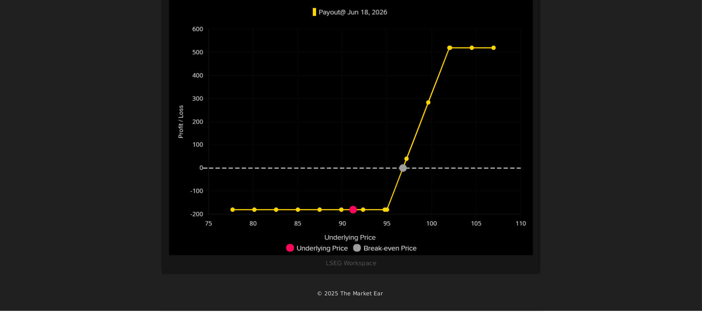
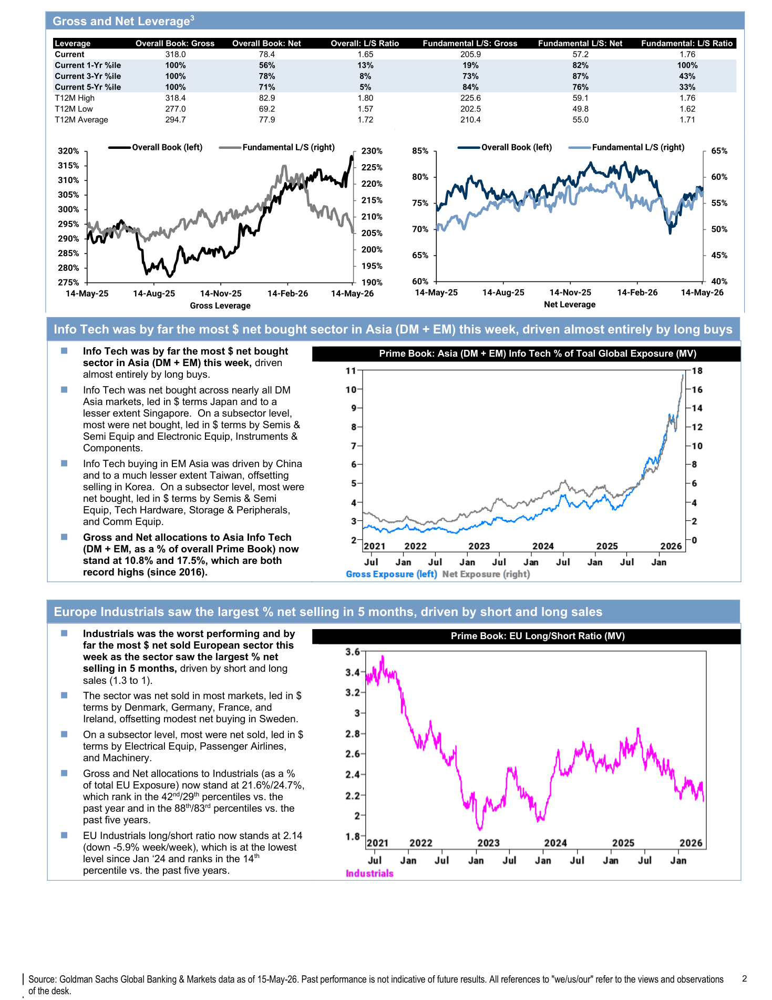
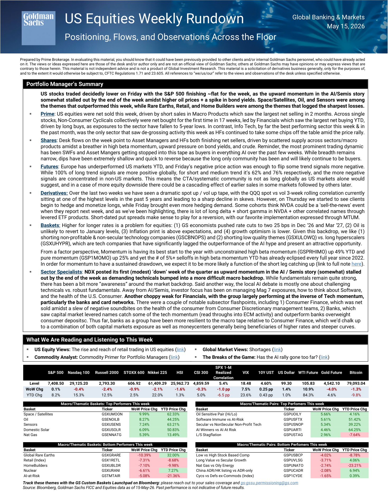
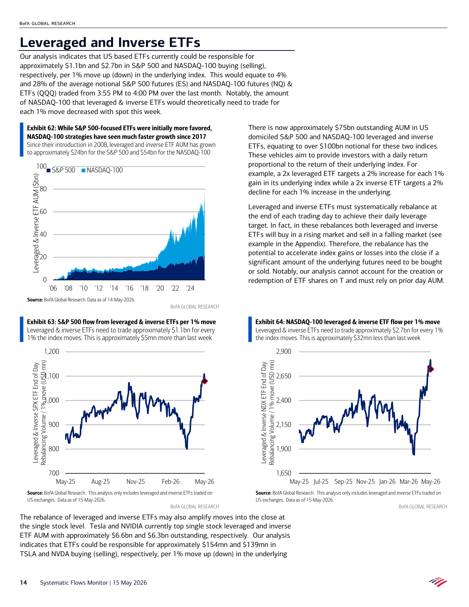
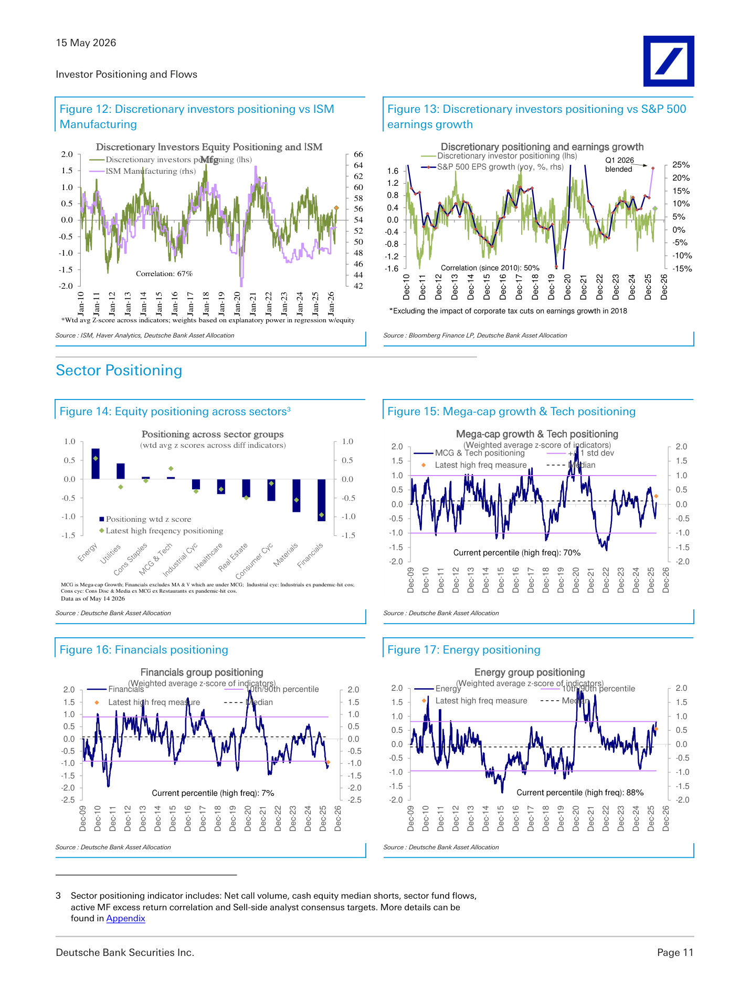
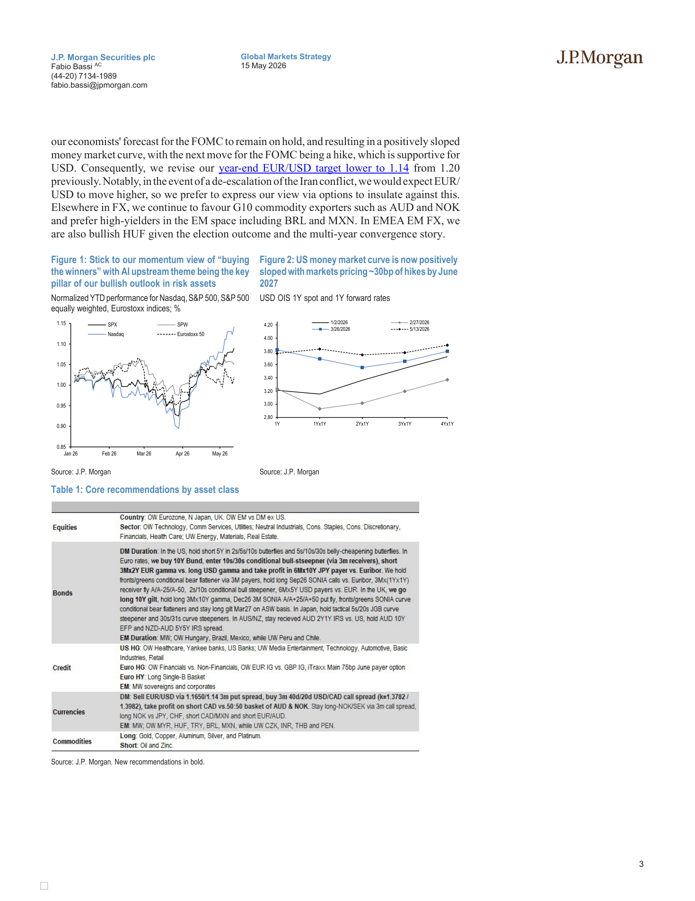
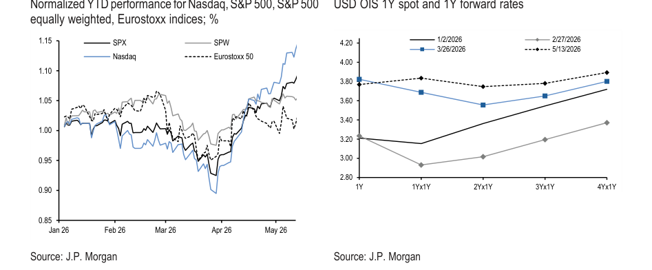

weekly mash --1
Chart 1

Chart 2

Chart 3

Trading_and_investment_papers plus Daily Shot when available.
Bottom line: This packet is the one-stop morning read: curated chart evidence first, Daily Shot context second, and source links at the end.

What it says: One Of Tech s Biggest Rotations Is Brewing: LSEG Workspace LSEG Workspace IGV IGV has bounced aggressively since hitting major range lows some weeks ago. Software has consolidated over the past week, but continues inching higher. A close above $92 could re-ignite the squeeze. Note we are already back...









What it says: BofA Systematic Flows Monitor Systematic flows stabilize as equity: Systematic Flows Monitor | 15 May 2026 23 Exhibit 81: Historical SPX gamma for Firms, MMs, Flex and ∆-Hedgers Our estimates for ∆-Hedger (= firm + mm + flex) gamma assume that firms delta-hedge only regular options while market makers hedge regular & flex S...





What it says: JPM The J P Morgan View Higher for Longer in Oil and Rates Own AI: Figure 1: Stick to our momentum view of “buying the winners” with AI upstream theme being the key pillar of our bullish outlook in risk assets Normalized YTD performance for Nasdaq, S&P 500, S&P 500 equally weighted, Eurostoxx indices; % 0.85 0.90 0.95 1.00...
